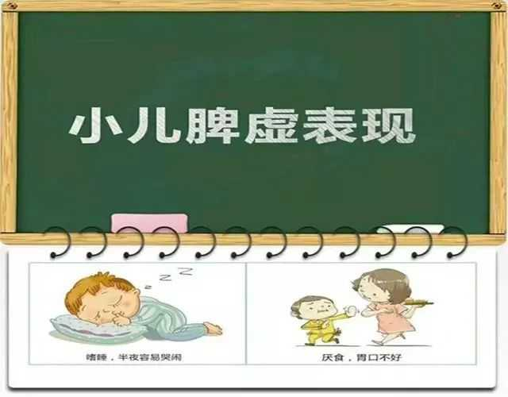
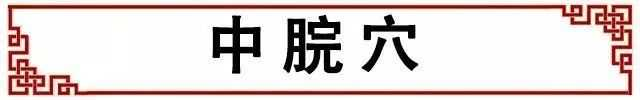
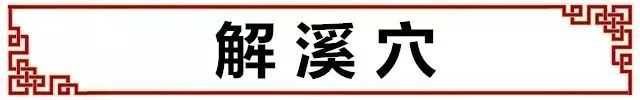
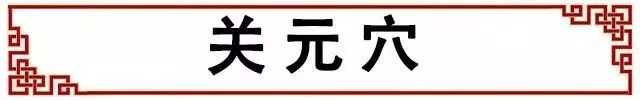
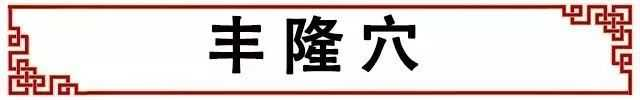
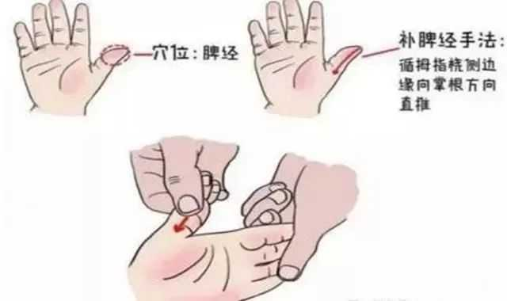
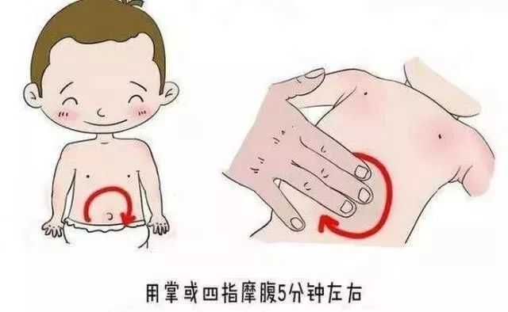
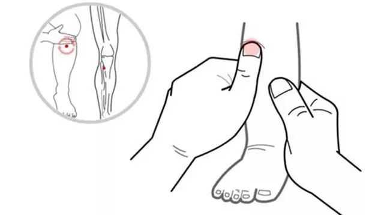
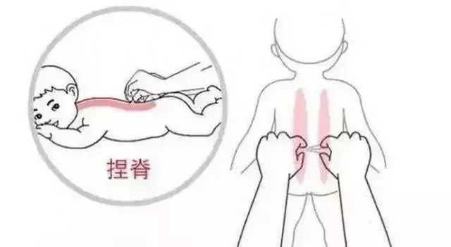

给孩子补钙，补锌，各种维生素ABCD，可是怎么补，孩子就是不吃饭，身体差，也不长个，这些让人很头痛的问题，其实是由脾虚导致的。
一、为什么孩子容易脾虚
小朋友没有完全发育好，脾胃弱，吃东西稍不注意，就会出现消化不良。
有的宝宝偏食肉食，以致吃得太多而造成“停食”，也可使脾胃之气呆滞。
此外，过量甜食（如糖果、巧克力等）亦可造成脾胃气滞，招致脾虚。宝宝的脾胃功能一旦虚弱，就会出现胃满腹胀，缺乏饥饿感，进食量减少，腹痛、拉肚子等。
孩子脾虚的表现：

现在的孩子十个有八个脾胃虚弱，脾胃虚弱的宝宝有下面的症状：
1、孩子消瘦或过胖、脸色发青或黄、易流口水或口水过多。
2、舌苔白厚或黄厚（黄为有热）。
3、口唇干或裂（多为脾虚有热）。
4、易出现湿疹（湿疹的病根在于脾胃虚弱、生湿化热）。
5、厌食或饮食过多（无节制）。
6、腹部胀大或腹胀有气、排气多或放屁有味。
7、腹泻（包括大便次数多，大便质地不好如蛋花样便或便水或水便分离）。
8、便秘（包括大便干如球状、大便几天一次、大便头干后正常、排便困难，多为有热，也有单纯脾虚的）。
9、尿床频繁或小便偏多等。以及孩子主诉的腹痛等。
如果你自测宝宝符合上面3条，那十有八九是脾虚了。脾虚的宝宝爱生病，易感冒、腹泻，长此下去，必然会影响宝宝的生长发育。
二、养生脾为先
1、孩子脾胃虚弱，艾灸这4大穴位
①中脘穴

作用：每天艾灸10-15分钟，能有效缓解胃部不适的症状，此穴的主调疾病为：消化系统疾病，如腹胀、腹泻、腹痛、腹鸣、吞酸、呕吐、便秘、黄疸等。
②解溪穴

作用：这个穴位是全身祛痰祛湿的穴位。每日对解溪穴艾灸15分钟，坚持一段时间，能够很好祛湿效果。
③关元穴

作用：长期对关元穴施灸或者艾灸有助于调理气血、补肾固精。每日可以艾灸10-15分钟，能够帮助缓解小儿尿床频繁或小便偏多等。
作用：调理脾胃、调理气血、助消化、补虚弱。
④丰隆穴

作用：针对这个穴位咳嗽痰多，效果较佳，可以有效健脾祛痰。
九洲福磁疗艾灸贴是一款自发热、便携式艾灸贴，哪里不舒服就贴哪里。它省去了传统艾灸的繁琐，操作简单、携带方便，让艾灸变得更轻松。上着班、赶着公交地铁、躺在家里沙发上、看着书听着歌......都可以艾灸。在不妨碍工作和生活的同时，极大地缓解身体疲劳，及时补充人体阳气，让人元气满满。灸好不好？坚持了才知道！
2、小儿推拿健脾胃的四大手法
①补脾经300-500次
脾经所在位置为：小儿拇指螺纹面。
操作方法：旋推或者将患儿拇指屈曲，从拇指桡侧（拇指方向）边缘向掌跟方向直推为补。
顺时针摩腹3~5分钟。

②摩腹
操作方法：以手掌面附着在孩子腹部，以神阙（肚脐）为中心顺时针摩擦，不宜过重，速度宜快，频率大约每分钟120-160次。

③揉足三里100次
操作方法：按摩时，家长用大拇指或中指按压孩子足三里穴，每次每穴按压5-10分钟

④捏脊5-7次
操作方法：用双手的中指、无名指和小指握成半拳状，食指半屈，拇指伸直对准食指前半段，然后顶住小儿皮肤，拇指、食指前移，提拿皮肉，自尾椎两旁双手交替向前，推动至大椎两旁。



推动健康产业发展 助力全民健康生活
加入我们，打造 [ 千城万店 · 健康万民 ]
Promote the development of the health industry
上海运营总部：上海青浦区汇龙路695号C栋8楼(叶迪大厦)
华东运营中心：江苏省昆山市花桥镇绿地大道231弄2号楼
西南运营中心：成都市高新区环球中心E1-1212
欢迎关注百龄足官方微信或拨打400客服电话详询！
Welcome to Bailingzu official or call customer service phone for detailed inquiries
 商务合作
商务合作
 在线咨询
在线咨询